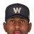

Franchise record book · MLB
Washington Cherry Blossoms
Seasons covered: 2002–2002. Only games played for this franchise count.
This club has no pre-2002 history in the export, so its record book is the 2002 season to date. Rate records need 3.1 PA or 1 inning per team game.
Home runs
| # | Player | Season | Team | Home runs |
|---|---|---|---|---|
| #1 | 2002 (MLB) |  Washington Cherry Blossoms Washington Cherry Blossoms | 8 | |
| #2 | 2002 (MLB) | Washington Cherry Blossoms | 7 | |
| #3 | 2002 (MLB) | Washington Cherry Blossoms | 6 | |
| #4 | 2002 (MLB) | Washington Cherry Blossoms | 4 | |
| #5 | 2002 (MLB) | Washington Cherry Blossoms | 4 | |
| #6 | 2002 (MLB) | Washington Cherry Blossoms | 3 | |
| #7 | 2002 (MLB) | Washington Cherry Blossoms | 3 | |
| #8 | 2002 (MLB) | Washington Cherry Blossoms | 3 | |
| #9 | 2002 (MLB) | Washington Cherry Blossoms | 3 | |
| #10 | 2002 (MLB) | Washington Cherry Blossoms | 2 |
Hits
| # | Player | Season | Team | Hits |
|---|---|---|---|---|
| #1 | 2002 (MLB) | Washington Cherry Blossoms | 49 | |
| #2 | 2002 (MLB) | Washington Cherry Blossoms | 48 | |
| #3 | 2002 (MLB) | Washington Cherry Blossoms | 45 | |
| #4 | 2002 (MLB) | Washington Cherry Blossoms | 45 | |
| #5 | 2002 (MLB) | Washington Cherry Blossoms | 41 | |
| #6 | 2002 (MLB) | Washington Cherry Blossoms | 39 | |
| #7 | 2002 (MLB) | Washington Cherry Blossoms | 31 | |
| #8 | 2002 (MLB) | Washington Cherry Blossoms | 30 | |
| #9 | 2002 (MLB) | Washington Cherry Blossoms | 29 | |
| #10 | 2002 (MLB) | Washington Cherry Blossoms | 15 |
RBI
| # | Player | Season | Team | RBI |
|---|---|---|---|---|
| #1 | 2002 (MLB) | Washington Cherry Blossoms | 27 | |
| #2 | 2002 (MLB) | Washington Cherry Blossoms | 19 | |
| #3 | 2002 (MLB) | Washington Cherry Blossoms | 19 | |
| #4 | 2002 (MLB) | Washington Cherry Blossoms | 18 | |
| #5 | 2002 (MLB) | Washington Cherry Blossoms | 17 | |
| #6 | 2002 (MLB) | Washington Cherry Blossoms | 16 | |
| #7 | 2002 (MLB) | Washington Cherry Blossoms | 15 | |
| #8 | 2002 (MLB) | Washington Cherry Blossoms | 14 | |
| #9 | 2002 (MLB) | Washington Cherry Blossoms | 12 | |
| #10 | 2002 (MLB) | Washington Cherry Blossoms | 8 |
Runs
| # | Player | Season | Team | Runs |
|---|---|---|---|---|
| #1 | 2002 (MLB) | Washington Cherry Blossoms | 29 | |
| #2 | 2002 (MLB) | Washington Cherry Blossoms | 25 | |
| #3 | 2002 (MLB) | Washington Cherry Blossoms | 21 | |
| #4 | 2002 (MLB) | Washington Cherry Blossoms | 19 | |
| #5 | 2002 (MLB) | Washington Cherry Blossoms | 19 | |
| #6 | 2002 (MLB) | Washington Cherry Blossoms | 18 | |
| #7 | 2002 (MLB) | Washington Cherry Blossoms | 17 | |
| #8 | 2002 (MLB) | Washington Cherry Blossoms | 12 | |
| #9 | 2002 (MLB) | Washington Cherry Blossoms | 11 | |
| #10 | 2002 (MLB) | Washington Cherry Blossoms | 5 |
Stolen bases
| # | Player | Season | Team | Stolen bases |
|---|---|---|---|---|
| #1 | 2002 (MLB) | Washington Cherry Blossoms | 4 | |
| #2 | 2002 (MLB) | Washington Cherry Blossoms | 4 | |
| #3 | 2002 (MLB) | Washington Cherry Blossoms | 3 | |
| #4 | 2002 (MLB) | Washington Cherry Blossoms | 2 | |
| #5 | 2002 (MLB) | Washington Cherry Blossoms | 1 | |
| #6 | 2002 (MLB) | Washington Cherry Blossoms | 1 | |
| #7 | 2002 (MLB) | Washington Cherry Blossoms | 1 | |
| #8 | 2002 (MLB) | Washington Cherry Blossoms | 1 | |
| #9 | 2002 (MLB) | Washington Cherry Blossoms | 0 | |
| #10 | 2002 (MLB) | Washington Cherry Blossoms | 0 |
Doubles
| # | Player | Season | Team | Doubles |
|---|---|---|---|---|
| #1 | 2002 (MLB) | Washington Cherry Blossoms | 17 | |
| #2 | 2002 (MLB) | Washington Cherry Blossoms | 14 | |
| #3 | 2002 (MLB) | Washington Cherry Blossoms | 13 | |
| #4 | 2002 (MLB) | Washington Cherry Blossoms | 12 | |
| #5 | 2002 (MLB) | Washington Cherry Blossoms | 8 | |
| #6 | 2002 (MLB) | Washington Cherry Blossoms | 8 | |
| #7 | 2002 (MLB) | Washington Cherry Blossoms | 7 | |
| #8 | 2002 (MLB) | Washington Cherry Blossoms | 6 | |
| #9 | 2002 (MLB) | Washington Cherry Blossoms | 4 | |
| #10 | 2002 (MLB) | Washington Cherry Blossoms | 3 |
Triples
| # | Player | Season | Team | Triples |
|---|---|---|---|---|
| #1 | 2002 (MLB) | Washington Cherry Blossoms | 3 | |
| #2 | 2002 (MLB) | Washington Cherry Blossoms | 1 | |
| #3 | 2002 (MLB) | Washington Cherry Blossoms | 1 | |
| #4 | 2002 (MLB) | Washington Cherry Blossoms | 1 | |
| #5 | 2002 (MLB) | Washington Cherry Blossoms | 0 | |
| #6 | 2002 (MLB) | Washington Cherry Blossoms | 0 | |
| #7 | 2002 (MLB) | Washington Cherry Blossoms | 0 | |
| #8 | 2002 (MLB) | Washington Cherry Blossoms | 0 | |
| #9 | 2002 (MLB) | Washington Cherry Blossoms | 0 | |
| #10 | 2002 (MLB) | Washington Cherry Blossoms | 0 |
Walks
| # | Player | Season | Team | Walks |
|---|---|---|---|---|
| #1 | 2002 (MLB) | Washington Cherry Blossoms | 17 | |
| #2 | 2002 (MLB) | Washington Cherry Blossoms | 16 | |
| #3 | 2002 (MLB) | Washington Cherry Blossoms | 16 | |
| #4 | 2002 (MLB) | Washington Cherry Blossoms | 15 | |
| #5 | 2002 (MLB) | Washington Cherry Blossoms | 15 | |
| #6 | 2002 (MLB) | Washington Cherry Blossoms | 14 | |
| #7 | 2002 (MLB) | Washington Cherry Blossoms | 11 | |
| #8 | 2002 (MLB) | Washington Cherry Blossoms | 8 | |
| #9 | 2002 (MLB) | Washington Cherry Blossoms | 7 | |
| #10 | 2002 (MLB) | Washington Cherry Blossoms | 4 |
Total bases
| # | Player | Season | Team | Total bases |
|---|---|---|---|---|
| #1 | 2002 (MLB) | Washington Cherry Blossoms | 79 | |
| #2 | 2002 (MLB) | Washington Cherry Blossoms | 79 | |
| #3 | 2002 (MLB) | Washington Cherry Blossoms | 71 | |
| #4 | 2002 (MLB) | Washington Cherry Blossoms | 70 | |
| #5 | 2002 (MLB) | Washington Cherry Blossoms | 68 | |
| #6 | 2002 (MLB) | Washington Cherry Blossoms | 60 | |
| #7 | 2002 (MLB) | Washington Cherry Blossoms | 56 | |
| #8 | 2002 (MLB) | Washington Cherry Blossoms | 51 | |
| #9 | 2002 (MLB) | Washington Cherry Blossoms | 42 | |
| #10 | 2002 (MLB) | Washington Cherry Blossoms | 28 |
Batting average qualified
| # | Player | Season | Team | Batting average |
|---|---|---|---|---|
| #1 | 2002 (MLB) | Washington Cherry Blossoms | .329 | |
| #2 | 2002 (MLB) | Washington Cherry Blossoms | .320 | |
| #3 | 2002 (MLB) | Washington Cherry Blossoms | .312 | |
| #4 | 2002 (MLB) | Washington Cherry Blossoms | .279 | |
| #5 | 2002 (MLB) | Washington Cherry Blossoms | .273 | |
| #6 | 2002 (MLB) | Washington Cherry Blossoms | .261 | |
| #7 | 2002 (MLB) | Washington Cherry Blossoms | .248 | |
| #8 | 2002 (MLB) | Washington Cherry Blossoms | .231 | |
| #9 | 2002 (MLB) | Washington Cherry Blossoms | .201 |
On-base % qualified
| # | Player | Season | Team | On-base % |
|---|---|---|---|---|
| #1 | 2002 (MLB) | Washington Cherry Blossoms | .394 | |
| #2 | 2002 (MLB) | Washington Cherry Blossoms | .388 | |
| #3 | 2002 (MLB) | Washington Cherry Blossoms | .371 | |
| #4 | 2002 (MLB) | Washington Cherry Blossoms | .365 | |
| #5 | 2002 (MLB) | Washington Cherry Blossoms | .333 | |
| #6 | 2002 (MLB) | Washington Cherry Blossoms | .324 | |
| #7 | 2002 (MLB) | Washington Cherry Blossoms | .320 | |
| #8 | 2002 (MLB) | Washington Cherry Blossoms | .305 | |
| #9 | 2002 (MLB) | Washington Cherry Blossoms | .243 |
Slugging % qualified
| # | Player | Season | Team | Slugging % |
|---|---|---|---|---|
| #1 | 2002 (MLB) | Washington Cherry Blossoms | .549 | |
| #2 | 2002 (MLB) | Washington Cherry Blossoms | .503 | |
| #3 | 2002 (MLB) | Washington Cherry Blossoms | .486 | |
| #4 | 2002 (MLB) | Washington Cherry Blossoms | .462 | |
| #5 | 2002 (MLB) | Washington Cherry Blossoms | .444 | |
| #6 | 2002 (MLB) | Washington Cherry Blossoms | .424 | |
| #7 | 2002 (MLB) | Washington Cherry Blossoms | .408 | |
| #8 | 2002 (MLB) | Washington Cherry Blossoms | .400 | |
| #9 | 2002 (MLB) | Washington Cherry Blossoms | .292 |
OPS qualified
| # | Player | Season | Team | OPS |
|---|---|---|---|---|
| #1 | 2002 (MLB) | Washington Cherry Blossoms | .943 | |
| #2 | 2002 (MLB) | Washington Cherry Blossoms | .857 | |
| #3 | 2002 (MLB) | Washington Cherry Blossoms | .837 | |
| #4 | 2002 (MLB) | Washington Cherry Blossoms | .833 | |
| #5 | 2002 (MLB) | Washington Cherry Blossoms | .781 | |
| #6 | 2002 (MLB) | Washington Cherry Blossoms | .765 | |
| #7 | 2002 (MLB) | Washington Cherry Blossoms | .732 | |
| #8 | 2002 (MLB) | Washington Cherry Blossoms | .729 | |
| #9 | 2002 (MLB) | Washington Cherry Blossoms | .535 |
WAR (OOTP)
| # | Player | Season | Team | WAR (OOTP) |
|---|---|---|---|---|
| #1 | 2002 (MLB) | Washington Cherry Blossoms | 1.4 | |
| #2 | 2002 (MLB) | Washington Cherry Blossoms | 0.9 | |
| #3 | 2002 (MLB) | Washington Cherry Blossoms | 0.8 | |
| #4 | 2002 (MLB) | Washington Cherry Blossoms | 0.5 | |
| #5 | 2002 (MLB) | Washington Cherry Blossoms | 0.5 | |
| #6 | 2002 (MLB) | Washington Cherry Blossoms | 0.2 | |
| #7 | 2002 (MLB) | Washington Cherry Blossoms | 0.2 | |
| #8 | 2002 (MLB) | Washington Cherry Blossoms | 0.2 | |
| #9 | 2002 (MLB) | Washington Cherry Blossoms | 0.2 | |
| #10 | 2002 (MLB) | Washington Cherry Blossoms | 0.1 |
Wins
| # | Player | Season | Team | Wins |
|---|---|---|---|---|
| #1 | 2002 (MLB) | Washington Cherry Blossoms | 5 | |
| #2 | 2002 (MLB) | Washington Cherry Blossoms | 3 | |
| #3 | 2002 (MLB) | Washington Cherry Blossoms | 3 | |
| #4 | 2002 (MLB) | Washington Cherry Blossoms | 2 | |
| #5 | 2002 (MLB) | Washington Cherry Blossoms | 2 | |
| #6 | 2002 (MLB) | Washington Cherry Blossoms | 1 | |
| #7 | 2002 (MLB) | Washington Cherry Blossoms | 1 | |
| #8 | 2002 (MLB) | Washington Cherry Blossoms | 1 | |
| #9 | 2002 (MLB) | Washington Cherry Blossoms | 1 | |
| #10 | 2002 (MLB) | Washington Cherry Blossoms | 1 |
Strikeouts
| # | Player | Season | Team | Strikeouts |
|---|---|---|---|---|
| #1 | 2002 (MLB) | Washington Cherry Blossoms | 73 | |
| #2 | 2002 (MLB) | Washington Cherry Blossoms | 49 | |
| #3 | 2002 (MLB) | Washington Cherry Blossoms | 36 | |
| #4 | 2002 (MLB) | Washington Cherry Blossoms | 31 | |
| #5 | 2002 (MLB) | Washington Cherry Blossoms | 20 | |
| #6 | 2002 (MLB) | Washington Cherry Blossoms | 19 | |
| #7 | 2002 (MLB) | Washington Cherry Blossoms | 19 | |
| #8 | 2002 (MLB) | Washington Cherry Blossoms | 14 | |
| #9 | 2002 (MLB) | Washington Cherry Blossoms | 14 | |
| #10 | 2002 (MLB) | Washington Cherry Blossoms | 9 |
Saves
| # | Player | Season | Team | Saves |
|---|---|---|---|---|
| #1 | 2002 (MLB) | Washington Cherry Blossoms | 3 | |
| #2 | 2002 (MLB) | Washington Cherry Blossoms | 2 | |
| #3 | 2002 (MLB) | Washington Cherry Blossoms | 1 | |
| #4 | 2002 (MLB) | Washington Cherry Blossoms | 0 | |
| #5 | 2002 (MLB) | Washington Cherry Blossoms | 0 | |
| #6 |  Courtney Duncan • | 2002 (MLB) | Washington Cherry Blossoms | 0 |
| #7 | 2002 (MLB) | Washington Cherry Blossoms | 0 | |
| #8 | 2002 (MLB) | Washington Cherry Blossoms | 0 | |
| #9 | 2002 (MLB) | Washington Cherry Blossoms | 0 | |
| #10 | 2002 (MLB) | Washington Cherry Blossoms | 0 |
Innings
| # | Player | Season | Team | Innings |
|---|---|---|---|---|
| #1 | 2002 (MLB) | Washington Cherry Blossoms | 62.1 | |
| #2 | 2002 (MLB) | Washington Cherry Blossoms | 57.0 | |
| #3 | 2002 (MLB) | Washington Cherry Blossoms | 51.2 | |
| #4 | 2002 (MLB) | Washington Cherry Blossoms | 47.2 | |
| #5 | 2002 (MLB) | Washington Cherry Blossoms | 28.1 | |
| #6 | 2002 (MLB) | Washington Cherry Blossoms | 27.1 | |
| #7 | 2002 (MLB) | Washington Cherry Blossoms | 17.1 | |
| #8 | 2002 (MLB) | Washington Cherry Blossoms | 16.2 | |
| #9 | 2002 (MLB) | Washington Cherry Blossoms | 16.0 | |
| #10 | 2002 (MLB) | Washington Cherry Blossoms | 14.0 |
Complete games
| # | Player | Season | Team | Complete games |
|---|---|---|---|---|
| #1 | 2002 (MLB) | Washington Cherry Blossoms | 1 | |
| #2 | 2002 (MLB) | Washington Cherry Blossoms | 1 | |
| #3 | 2002 (MLB) | Washington Cherry Blossoms | 1 | |
| #4 | 2002 (MLB) | Washington Cherry Blossoms | 1 | |
| #5 | 2002 (MLB) | Washington Cherry Blossoms | 0 | |
| #6 | Courtney Duncan • | 2002 (MLB) | Washington Cherry Blossoms | 0 |
| #7 | 2002 (MLB) | Washington Cherry Blossoms | 0 | |
| #8 | 2002 (MLB) | Washington Cherry Blossoms | 0 | |
| #9 | 2002 (MLB) | Washington Cherry Blossoms | 0 | |
| #10 | 2002 (MLB) | Washington Cherry Blossoms | 0 |
Shutouts
| # | Player | Season | Team | Shutouts |
|---|---|---|---|---|
| #1 | 2002 (MLB) | Washington Cherry Blossoms | 1 | |
| #2 | 2002 (MLB) | Washington Cherry Blossoms | 0 | |
| #3 | 2002 (MLB) | Washington Cherry Blossoms | 0 | |
| #4 | Courtney Duncan • | 2002 (MLB) | Washington Cherry Blossoms | 0 |
| #5 | 2002 (MLB) | Washington Cherry Blossoms | 0 | |
| #6 | 2002 (MLB) | Washington Cherry Blossoms | 0 | |
| #7 | 2002 (MLB) | Washington Cherry Blossoms | 0 | |
| #8 | 2002 (MLB) | Washington Cherry Blossoms | 0 | |
| #9 | 2002 (MLB) | Washington Cherry Blossoms | 0 | |
| #10 | 2002 (MLB) | Washington Cherry Blossoms | 0 |
ERA qualified
| # | Player | Season | Team | ERA |
|---|---|---|---|---|
| #1 | 2002 (MLB) | Washington Cherry Blossoms | 4.04 | |
| #2 | 2002 (MLB) | Washington Cherry Blossoms | 4.53 | |
| #3 | 2002 (MLB) | Washington Cherry Blossoms | 5.05 | |
| #4 | 2002 (MLB) | Washington Cherry Blossoms | 5.53 |
WHIP qualified
| # | Player | Season | Team | WHIP |
|---|---|---|---|---|
| #1 | 2002 (MLB) | Washington Cherry Blossoms | 1.24 | |
| #2 | 2002 (MLB) | Washington Cherry Blossoms | 1.39 | |
| #3 | 2002 (MLB) | Washington Cherry Blossoms | 1.42 | |
| #4 | 2002 (MLB) | Washington Cherry Blossoms | 1.64 |
K/9 qualified
| # | Player | Season | Team | K/9 |
|---|---|---|---|---|
| #1 | 2002 (MLB) | Washington Cherry Blossoms | 10.5 | |
| #2 | 2002 (MLB) | Washington Cherry Blossoms | 9.3 | |
| #3 | 2002 (MLB) | Washington Cherry Blossoms | 5.7 | |
| #4 | 2002 (MLB) | Washington Cherry Blossoms | 5.4 |
WAR (OOTP)
| # | Player | Season | Team | WAR (OOTP) |
|---|---|---|---|---|
| #1 | 2002 (MLB) | Washington Cherry Blossoms | 1.3 | |
| #2 | 2002 (MLB) | Washington Cherry Blossoms | 1.3 | |
| #3 | 2002 (MLB) | Washington Cherry Blossoms | 0.7 | |
| #4 | 2002 (MLB) | Washington Cherry Blossoms | 0.5 | |
| #5 | 2002 (MLB) | Washington Cherry Blossoms | 0.5 | |
| #6 | 2002 (MLB) | Washington Cherry Blossoms | 0.4 | |
| #7 | 2002 (MLB) | Washington Cherry Blossoms | 0.4 | |
| #8 | 2002 (MLB) | Washington Cherry Blossoms | 0.2 | |
| #9 | 2002 (MLB) | Washington Cherry Blossoms | 0.1 | |
| #10 | Courtney Duncan • | 2002 (MLB) | Washington Cherry Blossoms | 0.0 |
Home runs
| # | Player | Years | Home runs |
|---|---|---|---|
| #1 | 1991–02 | 8 | |
| #2 | 2002–02 | 7 | |
| #3 | 2000–02 | 6 | |
| #4 | 1997–02 | 4 | |
| #5 | 1997–02 | 4 | |
| #6 | 1996–02 | 3 | |
| #7 | 2001–02 | 3 | |
| #8 | 1996–02 | 3 | |
| #9 | 1992–02 | 3 | |
| #10 | 1998–02 | 2 |
Hits
| # | Player | Years | Hits |
|---|---|---|---|
| #1 | 1997–02 | 49 | |
| #2 | 1998–02 | 48 | |
| #3 | 2002–02 | 45 | |
| #4 | 1996–02 | 45 | |
| #5 | 1991–02 | 41 | |
| #6 | 1992–02 | 39 | |
| #7 | 1997–02 | 31 | |
| #8 | 2000–02 | 30 | |
| #9 | 2001–02 | 29 | |
| #10 | 1996–02 | 15 |
RBI
| # | Player | Years | RBI |
|---|---|---|---|
| #1 | 1992–02 | 27 | |
| #2 | 2000–02 | 19 | |
| #3 | 1997–02 | 19 | |
| #4 | 1996–02 | 18 | |
| #5 | 2002–02 | 17 | |
| #6 | 1998–02 | 16 | |
| #7 | 1991–02 | 15 | |
| #8 | 2001–02 | 14 | |
| #9 | 1997–02 | 12 | |
| #10 | 1996–02 | 8 |
Runs
| # | Player | Years | Runs |
|---|---|---|---|
| #1 | 2002–02 | 29 | |
| #2 | 1996–02 | 25 | |
| #3 | 1991–02 | 21 | |
| #4 | 1997–02 | 19 | |
| #5 | 1997–02 | 19 | |
| #6 | 1998–02 | 18 | |
| #7 | 2000–02 | 17 | |
| #8 | 1992–02 | 12 | |
| #9 | 2001–02 | 11 | |
| #10 | 1996–02 | 5 |
Stolen bases
| # | Player | Years | Stolen bases |
|---|---|---|---|
| #1 | 2001–02 | 4 | |
| #2 | 1996–02 | 4 | |
| #3 | 2002–02 | 3 | |
| #4 | 1998–02 | 2 | |
| #5 | 1996–02 | 1 | |
| #6 | 2002–02 | 1 | |
| #7 | 1991–02 | 1 | |
| #8 | 1997–02 | 1 | |
| #9 | 1999–02 | 0 | |
| #10 | 2000–02 | 0 |
Doubles
| # | Player | Years | Doubles |
|---|---|---|---|
| #1 | 1998–02 | 17 | |
| #2 | 1996–02 | 14 | |
| #3 | 2002–02 | 13 | |
| #4 | 1991–02 | 12 | |
| #5 | 1997–02 | 8 | |
| #6 | 1992–02 | 8 | |
| #7 | 1997–02 | 7 | |
| #8 | 2000–02 | 6 | |
| #9 | 2001–02 | 4 | |
| #10 | 2002–02 | 3 |
Triples
| # | Player | Years | Triples |
|---|---|---|---|
| #1 | 2000–02 | 3 | |
| #2 | 1996–02 | 1 | |
| #3 | 1996–02 | 1 | |
| #4 | 1991–02 | 1 | |
| #5 | 1998–02 | 0 | |
| #6 | 1999–02 | 0 | |
| #7 | 2002–02 | 0 | |
| #8 | 2001–02 | 0 | |
| #9 | 1997–02 | 0 | |
| #10 | 2001–02 | 0 |
Walks
| # | Player | Years | Walks |
|---|---|---|---|
| #1 | 1997–02 | 17 | |
| #2 | 1992–02 | 16 | |
| #3 | 1991–02 | 16 | |
| #4 | 2002–02 | 15 | |
| #5 | 2000–02 | 15 | |
| #6 | 1997–02 | 14 | |
| #7 | 1998–02 | 11 | |
| #8 | 2001–02 | 8 | |
| #9 | 1996–02 | 7 | |
| #10 | 1996–02 | 4 |
Total bases
| # | Player | Years | Total bases |
|---|---|---|---|
| #1 | 2002–02 | 79 | |
| #2 | 1991–02 | 79 | |
| #3 | 1998–02 | 71 | |
| #4 | 1996–02 | 70 | |
| #5 | 1997–02 | 68 | |
| #6 | 2000–02 | 60 | |
| #7 | 1992–02 | 56 | |
| #8 | 1997–02 | 51 | |
| #9 | 2001–02 | 42 | |
| #10 | 1996–02 | 28 |
Batting average min 2,000 PA
| # | Player | Years | Batting average |
|---|
On-base % min 2,000 PA
| # | Player | Years | On-base % |
|---|
Slugging % min 2,000 PA
| # | Player | Years | Slugging % |
|---|
OPS min 2,000 PA
| # | Player | Years | OPS |
|---|
WAR (OOTP)
| # | Player | Years | WAR (OOTP) |
|---|---|---|---|
| #1 | 1991–02 | 1.4 | |
| #2 | 1997–02 | 0.9 | |
| #3 | 2002–02 | 0.8 | |
| #4 | 1998–02 | 0.5 | |
| #5 | 2000–02 | 0.5 | |
| #6 | 1997–02 | 0.2 | |
| #7 | 1992–02 | 0.2 | |
| #8 | 2002–02 | 0.2 | |
| #9 | 1996–02 | 0.2 | |
| #10 | 2002–02 | 0.1 |
Wins
| # | Player | Years | Wins |
|---|---|---|---|
| #1 | 2000–02 | 5 | |
| #2 | 1993–02 | 3 | |
| #3 | 2000–02 | 3 | |
| #4 | 1991–02 | 2 | |
| #5 | 2002–02 | 2 | |
| #6 | 1995–02 | 1 | |
| #7 | 2001–02 | 1 | |
| #8 | 2001–02 | 1 | |
| #9 | 2002–02 | 1 | |
| #10 | 2002–02 | 1 |
Strikeouts
| # | Player | Years | Strikeouts |
|---|---|---|---|
| #1 | 2000–02 | 73 | |
| #2 | 2002–02 | 49 | |
| #3 | 1991–02 | 36 | |
| #4 | 1993–02 | 31 | |
| #5 | 2002–02 | 20 | |
| #6 | 1995–02 | 19 | |
| #7 | 2001–02 | 19 | |
| #8 | 2000–02 | 14 | |
| #9 | 2002–02 | 14 | |
| #10 | 2001–02 | 9 |
Saves
| # | Player | Years | Saves |
|---|---|---|---|
| #1 | 2002–02 | 3 | |
| #2 | 2000–02 | 2 | |
| #3 | 1995–02 | 1 | |
| #4 | 2000–02 | 0 | |
| #5 | 1991–02 | 0 | |
| #6 | Courtney Duncan • | 2001–02 | 0 |
| #7 | 1997–02 | 0 | |
| #8 | 1993–02 | 0 | |
| #9 | 1994–02 | 0 | |
| #10 | 2001–02 | 0 |
Innings
| # | Player | Years | Innings |
|---|---|---|---|
| #1 | 2000–02 | 62.1 | |
| #2 | 1991–02 | 57.0 | |
| #3 | 1993–02 | 51.2 | |
| #4 | 2002–02 | 47.2 | |
| #5 | 2002–02 | 28.1 | |
| #6 | 2001–02 | 27.1 | |
| #7 | 1995–02 | 17.1 | |
| #8 | 2002–02 | 16.2 | |
| #9 | 2001–02 | 16.0 | |
| #10 | 2000–02 | 14.0 |
Complete games
| # | Player | Years | Complete games |
|---|---|---|---|
| #1 | 2000–02 | 1 | |
| #2 | 1991–02 | 1 | |
| #3 | 1993–02 | 1 | |
| #4 | 2002–02 | 1 | |
| #5 | 1995–02 | 0 | |
| #6 | Courtney Duncan • | 2001–02 | 0 |
| #7 | 1997–02 | 0 | |
| #8 | 1994–02 | 0 | |
| #9 | 2000–02 | 0 | |
| #10 | 2001–02 | 0 |
Shutouts
| # | Player | Years | Shutouts |
|---|---|---|---|
| #1 | 1991–02 | 1 | |
| #2 | 2000–02 | 0 | |
| #3 | 1995–02 | 0 | |
| #4 | Courtney Duncan • | 2001–02 | 0 |
| #5 | 1997–02 | 0 | |
| #6 | 1993–02 | 0 | |
| #7 | 1994–02 | 0 | |
| #8 | 2000–02 | 0 | |
| #9 | 2001–02 | 0 | |
| #10 | 2001–02 | 0 |
ERA min 500 IP
| # | Player | Years | ERA |
|---|
WHIP min 500 IP
| # | Player | Years | WHIP |
|---|
K/9 min 500 IP
| # | Player | Years | K/9 |
|---|
WAR (OOTP)
| # | Player | Years | WAR (OOTP) |
|---|---|---|---|
| #1 | 2002–02 | 1.3 | |
| #2 | 2000–02 | 1.3 | |
| #3 | 1991–02 | 0.7 | |
| #4 | 2002–02 | 0.5 | |
| #5 | 1995–02 | 0.5 | |
| #6 | 2001–02 | 0.4 | |
| #7 | 2002–02 | 0.4 | |
| #8 | 1993–02 | 0.2 | |
| #9 | 2000–02 | 0.1 | |
| #10 | Courtney Duncan • | 2001–02 | 0.0 |
League-wide record book · Washington Cherry Blossoms team page